# En caso que de ejecutar esto en Colab, van a tener que instalar Scikit-Plot para poder ver la curva de Silhouette.
#!pip install scikit-plotfrom sklearn.datasets import make_blobs
import pandas as pd
import matplotlib.pyplot as plt
import numpy as np
from sklearn.decomposition import PCA
from sklearn.preprocessing import StandardScaler
from sklearn.cluster import AgglomerativeClustering, KMeans, DBSCAN
from sklearn.metrics import silhouette_score
from sklearn import set_config
set_config(transform_output="pandas")
RANDOM_STATE = 0
np.random.seed(RANDOM_STATE)
N = np.random.randint(5, 15, size=1)[0]
n_samples = np.random.randint(100, 1000, size=N)X, _ = make_blobs(
n_samples=n_samples,
n_features=9,
cluster_std=2.5,
random_state=RANDOM_STATE,
)
df = pd.DataFrame(X)
dict_cat = {
0: "Cat 1",
1: "Cat 2",
2: "Cat 3",
}
rng = np.random.default_rng()
df["cat_var"] = rng.choice(a=[0, 1, 2], size=len(df), p=[0.2, 0.3, 0.5])
df["cat_var"] = df["cat_var"].map(dict_cat)
df.columns = [f"x{i}" for i, _ in enumerate(df.columns, start=1)]
df["x1"] += 100
df["x5"] *= 327
df["x9"] /= 15
df.to_csv("proyecto_clustering.csv", index=False)Las primeras celdas son sólo para poder generar el dataset de muestra. Esto generará un archivo llamado:
proyecto_clustering.csv
## Acá comienza oficialmente el código.
df = pd.read_csv("proyecto_clustering.csv")
df.dtypes.value_counts().plot(
kind="bar", title="Tipos de Datos en el Dataset", edgecolor="k"
)
plt.tight_layout()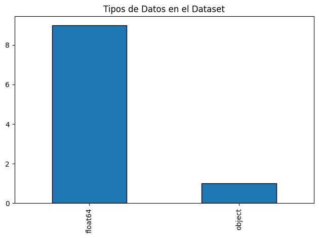
df.hist(figsize=(20, 6), edgecolor="k", grid=False)
plt.tight_layout()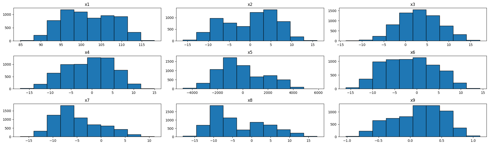
df["x10"].value_counts().plot(
kind="bar",
edgecolor="k",
title="Distribución de las Variables Categóricas",
)
plt.tight_layout()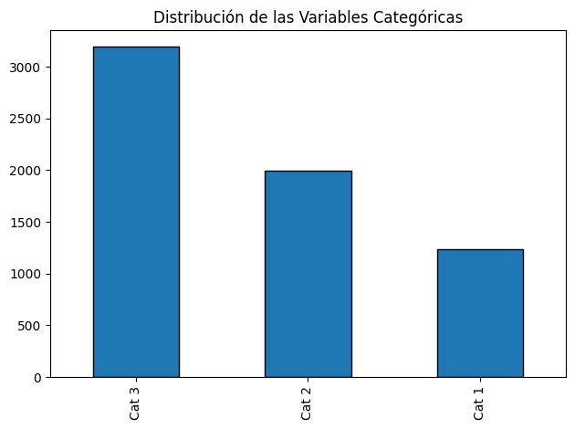
Variables Categóricas
from sklearn.preprocessing import OneHotEncoder
ohe = OneHotEncoder(sparse_output=False)
dummy_vars = ohe.fit_transform(df[["x10"]])
X = pd.concat([df.drop(columns="x10"), dummy_vars], axis=1)
X| x1 | x2 | x3 | x4 | x5 | x6 | x7 | x8 | x9 | x10_Cat 1 | x10_Cat 2 | x10_Cat 3 | |
|---|---|---|---|---|---|---|---|---|---|---|---|---|
| 0 | 105.576134 | 4.823419 | 3.409904 | -11.687494 | -1532.613468 | -4.589218 | -6.854641 | -8.877022 | -0.449964 | 0.0 | 0.0 | 1.0 |
| 1 | 100.479786 | -4.876628 | -5.404970 | 6.932649 | -4092.341900 | 12.163845 | -6.502116 | 10.874025 | 0.348683 | 0.0 | 0.0 | 1.0 |
| 2 | 97.357744 | 8.467431 | -0.865210 | 4.353712 | 1444.577125 | -1.992772 | -12.223474 | -9.100414 | 0.407230 | 0.0 | 0.0 | 1.0 |
| 3 | 95.857842 | 5.931475 | 0.278352 | 3.413013 | 1959.773064 | -10.248761 | -8.136656 | -9.158037 | 0.478212 | 0.0 | 0.0 | 1.0 |
| 4 | 99.772427 | -2.876912 | 4.499859 | 1.308382 | -2318.502069 | 2.062409 | -13.469304 | -0.236395 | 0.478002 | 0.0 | 1.0 | 0.0 |
| ... | ... | ... | ... | ... | ... | ... | ... | ... | ... | ... | ... | ... |
| 6418 | 98.951606 | 6.649525 | 1.869195 | 1.765821 | 4348.322822 | -6.866256 | -1.578755 | -12.749590 | 0.454056 | 0.0 | 0.0 | 1.0 |
| 6419 | 94.996949 | -6.638457 | 3.999433 | 0.989885 | -1811.824888 | -0.859185 | -7.422772 | 3.293839 | 0.558469 | 0.0 | 0.0 | 1.0 |
| 6420 | 95.495497 | 6.664764 | 0.019823 | 1.825686 | 2845.172238 | -7.376139 | -8.056029 | -10.066078 | 0.224961 | 0.0 | 0.0 | 1.0 |
| 6421 | 99.435967 | 5.469512 | 6.342347 | -1.182801 | -358.410366 | -1.205160 | 2.248149 | 6.840680 | 0.748647 | 0.0 | 1.0 | 0.0 |
| 6422 | 109.218858 | -6.367392 | -0.857113 | -6.749834 | 1913.311965 | -4.103422 | 0.343194 | -5.460592 | 0.121518 | 0.0 | 0.0 | 1.0 |
6423 rows × 12 columns
pca = PCA(n_components=2, random_state=42)
pca_X = pca.fit_transform(X)
plt.scatter(pca_X["pca0"], pca_X["pca1"])
plt.title("Visualización PCA del Dataset")
plt.tight_layout()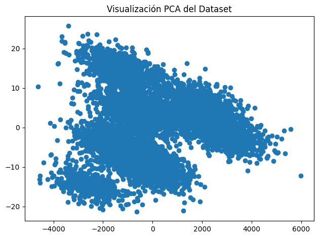
Preparación de los Datos
num_vars = [f"x{i}" for i in range(1, 10)]
cat_vars = [col for col in X.columns if col not in num_vars]
cat_vars['x10_Cat 1', 'x10_Cat 2', 'x10_Cat 3']sc = StandardScaler()
X[num_vars] = sc.fit_transform(X[num_vars])
X.hist(figsize=(20, 10), edgecolor="k")
plt.tight_layout()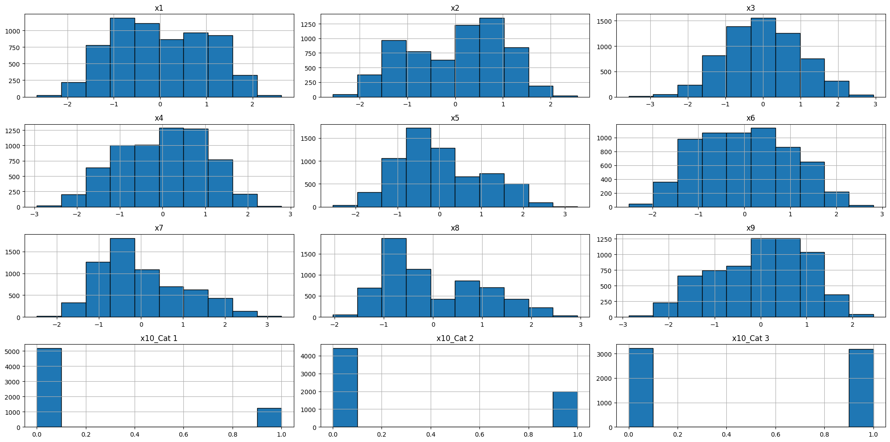
K-Means
def elbow_curve(X, k_max=10, color="blue", title=None):
wc = []
for k in range(1, k_max + 1):
km = KMeans(n_clusters=k, random_state=1)
km.fit(X)
wc.append(km.inertia_)
k = [*range(1, k_max + 1)]
plt.plot(k, wc, c=color, marker="*")
plt.title(title)
plt.xlabel("Número de Clústers")
plt.ylabel("Within Distance")
return wc
wc = elbow_curve(
X, k_max=20, color="blue", title="Curva del Codo para K-Means"
)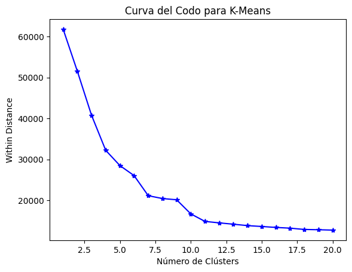
metricas = dict()K_KMEANS = 10
km = KMeans(n_clusters=K_KMEANS, n_init=10, random_state=RANDOM_STATE)
labels_km = km.fit_predict(X)s_km = silhouette_score(X, labels_km)
metricas["km_10"] = s_km
metricas{'km_10': 0.39419687509752793}Jerárquico
from scipy.cluster.hierarchy import dendrogram, linkage
def plot_dendogram(X, link="ward"):
Z = linkage(X, method=link)
plt.figure(figsize=(10, 5))
plt.title(f"Clustering Utilizando Iris, Método: {link}")
plt.xlabel("Iris Samples")
plt.ylabel("Distance")
dendrogram(Z, leaf_rotation=90.0, leaf_font_size=8.0)
plt.show()
linkage_list = ["single", "complete", "average", "ward"]
for l in linkage_list:
plot_dendogram(X, link=l)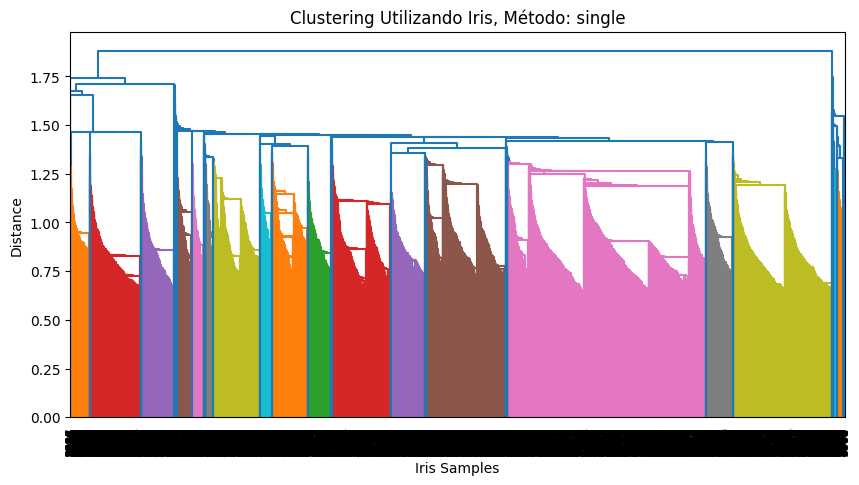
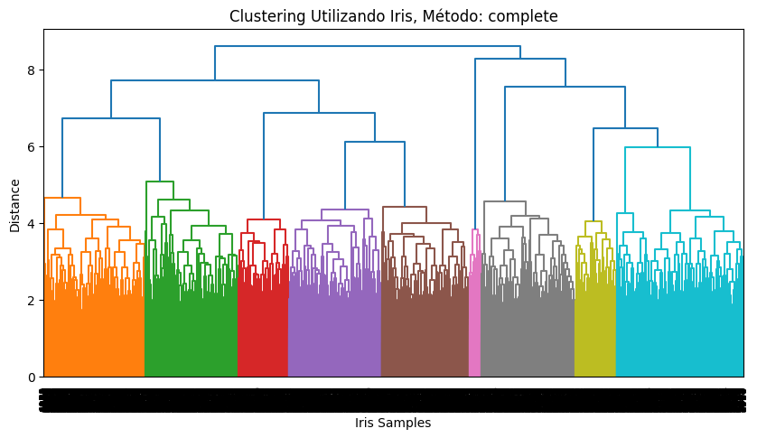
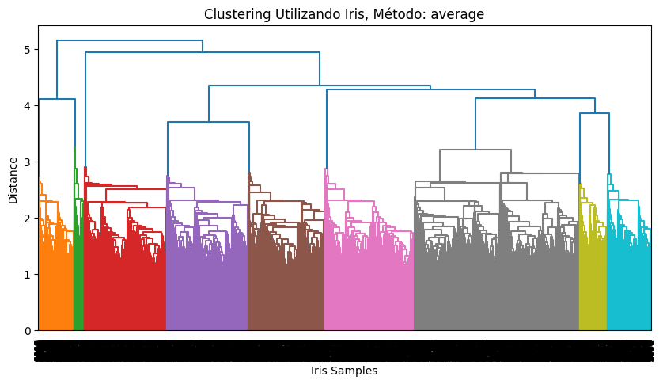
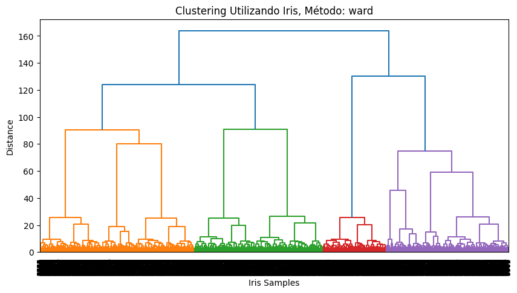
def train_hierarchical(K_H, linkage):
hc = AgglomerativeClustering(n_clusters=K_H, linkage=linkage)
labels_h = hc.fit_predict(X)
s_h = silhouette_score(X, labels_h)
print(f"El coeficiente de Silueta es {s_h}")
return labels_h, s_h
labels_c9, s_c9 = train_hierarchical(K_H=9, linkage="complete")
labels_a9, s_a9 = train_hierarchical(K_H=9, linkage="average")
labels_w4, s_w4 = train_hierarchical(K_H=4, linkage="ward")El coeficiente de Silueta es 0.37657025597625804
El coeficiente de Silueta es 0.3812263959798965
El coeficiente de Silueta es 0.2852126845283154metricas["s_c9"] = s_c9
metricas["s_a9"] = s_a9
metricas["s_w4"] = s_w4
metricas{'km_10': 0.39419687509752793,
's_c9': 0.37657025597625804,
's_a9': 0.3812263959798965,
's_w4': 0.2852126845283154}DBSCAN
from sklearn.neighbors import NearestNeighbors
MIN_SAMPLES = X.shape[1] + 1
def dbscan_elbow_plot(X, k=5):
knn = NearestNeighbors(n_neighbors=k)
knn.fit(X)
distances, _ = knn.kneighbors(X)
distances = np.sort(distances[:, -1])
n_pts = distances.shape[0]
plt.plot(range(1, n_pts + 1), distances)
plt.xlabel(
f"Puntos ordenados por Distancia al {k} vecino más cercano."
)
plt.ylabel(f"Distancia al {k} vecino más cercano")
plt.title(f"Búsqueda de EPS para DBSCAN con k={k}")
dbscan_elbow_plot(X, k=MIN_SAMPLES)
EPS = 1.6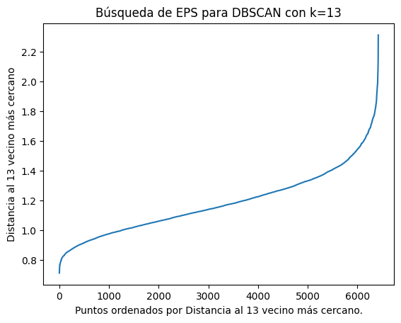
dbs = DBSCAN(eps=EPS, min_samples=MIN_SAMPLES)
labels_dbs = dbs.fit_predict(X)
s_dbs = silhouette_score(X, labels_dbs)
metricas["s_dbs"] = s_dbs
metricas{'km_10': 0.39419687509752793,
's_c9': 0.37657025597625804,
's_a9': 0.3812263959798965,
's_w4': 0.2852126845283154,
's_dbs': 0.1818560991479739}Evaluación
pd.Series(metricas.values(), index=metricas.keys()).plot(
kind="bar",
rot=0,
edgecolor="k",
title="Silhouette Score para los modelos generados",
)
plt.tight_layout()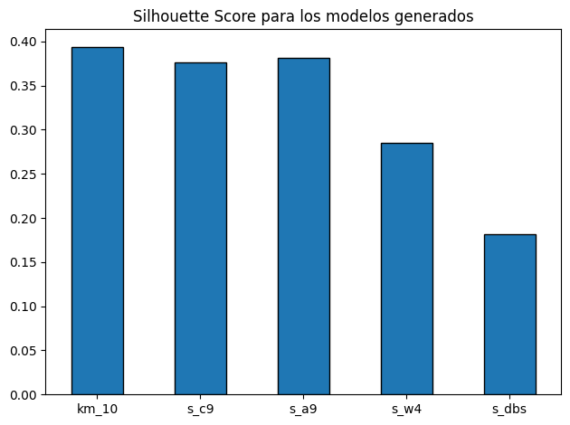
labels_kmarray([5, 9, 2, ..., 2, 0, 1], dtype=int32)import matplotlib.pyplot as plt
import matplotlib.colors as mcolors
def create_tables(df, labels, columns):
df["labels"] = labels
std = df.groupby("labels")[columns].std(numeric_only=True)
mean = df.groupby("labels")[columns].mean(numeric_only=True)
return mean, std
def center_analysis_viz(
df, n_clusters, labels, columns, title="", figsize=(20, 20)
):
clusters_axis = [f"Cluster {i}" for i in range(1, n_clusters + 1)]
n_columns = len(columns)
colors = list(mcolors.TABLEAU_COLORS.values())[:n_columns]
fig, ax = plt.subplots(n_columns, figsize=figsize)
mean_table, std_table = create_tables(df, labels, columns)
for i in range(n_columns):
ax[i].errorbar(
clusters_axis,
mean_table[columns[i]],
yerr=std_table[columns[i]],
capsize=20,
linestyle="none",
marker="o",
lw=3,
capthick=3,
ms=10,
c=colors[i],
)
ax[i].set_title(columns[i])
plt.suptitle(title, fontsize=15)
plt.tight_layout()
center_analysis_viz(
df,
n_clusters=10,
labels=labels_km,
columns=num_vars,
title="Análisis de Centro",
)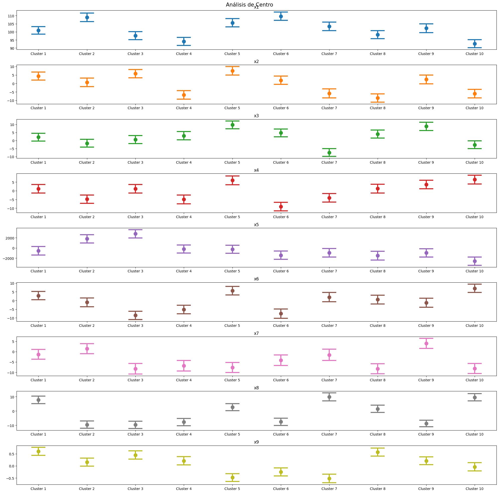
plt.scatter(pca_X["pca0"], pca_X["pca1"], c=labels_km)
plt.tight_layout()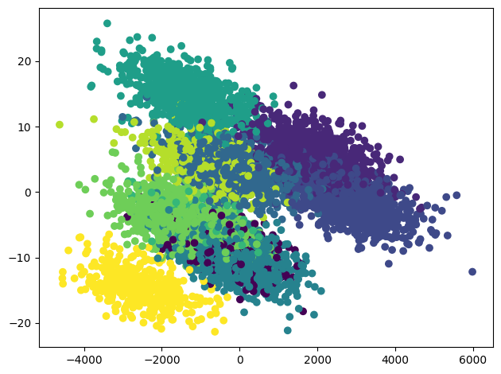
import scikitplot as skplt
skplt.metrics.plot_silhouette(X, labels_km)
plt.show()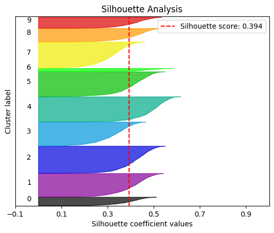